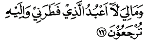
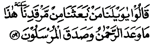
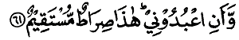
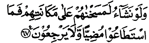
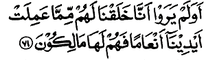
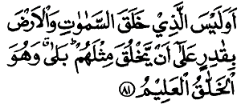

Bismillahir rahmaanir rahiim(i).
Dengan menyebut nama Allah yang Maha Pengasih lagi Maha Penyayang.
-
Yaasiin.
Yaasiin.
-
Wal qur-aanil hakiim(i).
Demi Al-Qur'an yang penuh hikmah.
-
Innaka laminal mursaliin(a).
Sesungguhnya kamu adalah termasuk orang-orang yang diutus (rasul).
-
`Alaa shiraatim mustaqiim(in).
Di atas jalan yang lurus.
-
Tanziilal `aziizir rahiim(i).
Yang diturunkan oleh Yang Maha Perkasa lagi Maha Penyayang.
-
Li tundzira qaumam maa undzira aabaa-uhum fa hum ghaafiluun(a).
Agar kamu memberi peringatan kepada kaum yang mana bapak-bapak mereka belum diberi peringatan maka mereka lalai.
-
Laqad haqqal qaulu `alaa aktsarihim fahum laa yu"minuun(a).
Sungguh telah pasti perkataan (ketentuan) Allah atas kebanyakan mereka karena mereka tidak beriman.
-
Innaa ja`alnaa fii a`naaqihim aghlaalan fahiya ilal adzqaani fa hum muqmahuun(a).
Sungguh Kami telah menjadikan belenggu di leher mereka, lalu tangan mereka (diangkat) ke dagu maka mereka tertengadah.
-
Wa ja`alnaa mim baini aidiihim saddaw wa min khalfihim saddan fa aghsyainaahum fa hum laa yubshiruun(a).
Dan Kami jadikan dinding di hadapan mereka dan dinding di belakang mereka; dan Kami tutup (mata) mereka sehingga mereka tidak melihat.
-
Wa sawaa-un `alaihim a andzartahum am lam tundzirhum laa yu"minuun(a).
Sama saja bagi mereka apakah kamu memberi peringatan kepada mereka ataukah kamu tidak memberikan peringatan kepada mereka, mereka tidak beriman.
-
Innamaa tundziru manittaba`adz dzikra wa khasyiyar rahmaana bil ghaibi fabasysyirhu bi maghfiratiw wa ajrin kariim(in).
Kamu hanyalah memberi peringatan kepada orang yang mau mengikuti peringatan dan yang takut kepada Yang Maha Pemurah (Tuhan) walau ia tidak melihatnya. Maka beri kabar gembiralah ia dengan ampunan dan pahala yang mulia.
-
Innaa nahnu nuhyil mautaa wa naktubu maa qaddamuu wa aatsaarahum wa kulla syai-in ahshainaahu fii imaamim mubiin(in).
Sungguh Kami menghidupkan orang-orang mati dan Kami menuliskan apa yang telah mereka kerjakan dan bekas-bekas yang mereka tinggalkan; dan segala sesuatu kami himpun dalam Kitab Induk yang nyata (Lauhul Mahfuuzh).
-

Wadhrib lahum matsalan ashhaabal qaryah, idz jaa-ahal mursaluun(a).
Dan buatlah bagi mereka suatu perumpamaan yaitu penduduk sebuah desa ketika para utusan (rasul) datang kepada mereka.
-
Idz arsalnaa ilaihimutsnaini fa kadzdzabuu-humaa fa `azzaznaa bi tsaalitsin fa qaaluu innaa ilaikum mursaluun(a).
(Yaitu) ketika kami mengutus dua orang (rasul) kepada mereka lalu mereka mendustakan keduanya, lalu Kami kuatkan dengan (rasul) yang ketiga. Maka mereka (para rasul) itu berkata: "Sesungguhnya kami adalah orang-orang yang diutus kepadamu".
-
Qaaluu maa antum illaa basyarum mitslunaa wa maa anzalar rahmaanu min syai-in in antum illaa takdzibuun(a).
Mereka (penduduk negeri itu) menjawab: "Kamu hanyalah manusia seperti kami dan Dzat Yang Maha Pemurah tidaklah menurunkan sesuatu pun, kamu hanyalah berdusta".
-

Qaaluu rabbunaa ya`lamu innaa ilaikum la-mursaluun(a).
Mereka (para rasul itu) berkata: "Tuhan kami mengetahui bahwasanya kami adalah orang-orang yang diutus kepadamu".
-
Wa maa `alainaa illal balaaghul mubiin(u).
Dan kewajiban kami hanyalah menyampaikan (kerisalahan) yang menerangkan.
-
Qaaluu innaa tathayyarnaa bikum la-il lam tantahuu lanarjumannakum wa layamassan-nakum minnaa `adzaabun aliim(un).
Mereka (penduduk negeri itu) menjawab: "Sesungguhnya kami menjadi sial karena kamu". Sungguh jika kamu tidak berhenti, niscaya kami akan merajam kamu dan kamu sungguh akan ditimpa siksaan yang pedih dari kami.
-
Qaaluu thaa-irukum ma`akum a in dzuk-kirtum bal antum qaumum musrifuun(a).
Mereka (para rasul itu) berkata: "Kesialanmu beserta kamu. Apakah jika kamu diberi peringatan (maka kamu merasa sial dan mengancam)? Sebenarnya kamu adalah kaum yang melampaui batas".
-
Wa jaa-a min aqshal madiinati rajuluy yas`aa qaala yaa qaumittabi`ul mursaliin(a).
Dan seorang laki-laki datang dari ujung kota dengan tergesa-gesa, lalu ia berkata: "Wahai kaumku, ikutilah orang-orang yang diutus itu.
-
Ittabi'uu mal laa yas-alukum ajraw wa hu muhtaduun(a).
Ikutilah orang yang tidak minta upah kepadamu, sedangkan mereka adalah orang-orang yang mendapat petunjuk.
- 
Wa maa liya laa a`budul ladzii fatharanii wa ilaihi tur ja`uun(a).
Dan mengapa saya tidak menyembah (Tuhan) Yang telah menciptakan saya padahal hanya kepada Nyalah kamu (semua) dikembalikan.
-
A attakhidzu min duunihii aalihatan iy yuridnir rahmaanu bi dhurril la tughni `annii syafaa`atuhum syai-aw wa laa yunqidzuun(i).
Mengapa saya akan menjadikan tuhan-tuhan selain-Nya; jika (Tuhan) Yang Maha Pemurah menghendaki kemadharatan kepada saya, niscaya syafaat mereka tidak memberi manfaat sedikit pun bagi diri saya dan mereka tidak dapat menyelamatkan saya.
-
Innii idzal lafii dhalaalim mubiin(in).
Kalau demikian, sesungguhnya saya sungguh dalam kesesatan yang nyata.
-
Innii aamantu bi rabbikum fasma`uun(i).
Sesungguhnya saya telah beriman kepada Tuhanmu; maka dengarlah (pengakuan keimanan)ku."
-
Qiiladkhulil jannah (jannata) qaala yaa laita qaumii ya`lamuun(a).
Dikatakan (kepadanya): "Masuklah ke dalam surga!" Ia berkata: "Alangkah baiknya sekiranya kaumku mengetahui".
-
Bimaa ghafara lii rabbii wa ja`alanii minal mukramiin(a).
Apa yang menyebabkan Tuhanku memberi ampunan kepadaku dan menjadikan saya di antara orang-orang yang dimuliakan.
-
Wa maa anzalnaa `alaa qaumihii mim ba`dihii min jundim minas samaa-i wa maa kunnaa munziliin(a).
Dan Kami tidak menurunkan kepada kaumnya sesudah (wafat)nya suatu pasukan pun dari langit dan tidak layak Kami menurunkannya.
-
In kaanat illaa shaihataw waahidatan fa idzaahum khaamiduun(a).
Tidak ada siksaan atas mereka melainkan satu pekikan saja, maka tiba-tiba mereka mati.
-
Yaa hasratan `alal `ibaadi maa ya"tiihim mir rasuulin illa kaanuu bihii yastahzi-uun(a).
Wahai penyesalan (yang ditimpakan) atas hamba-hamba itu, tidak sekali-kali datang kepada mereka seorang rasul pun melainkan mereka memperolok-olokkannya.
-
Alam yarau kam ahlaknaa qablahum minal quruuni annahum ilaihim laa yarji`uun(a).
Apakah mereka tidak mengetahui berapa banyak umat-umat sebelum mereka yang telah Kami binasakan bahwasanya orang-orang (yang telah Kami binasakan) tidak kembali kepada mereka.
-
Wa in kullul lammaa jamii`ul ladainaa muhdharuun(a).
Dan sesungguhnya setiap mereka akan dikumpulkan dan dihadirkan di hadapan Kami.
-
Wa aayatul lahumul ardhul maitatu ahyainaahaa wa akhrajnaa minhaa habban fa minhu ya"kuluun(a).
Dan suatu tanda (kekuasaan Allah) bagi mereka adalah bumi yang mati, Kami hidupkan bumi itu dan Kami keluarkan daripadanya biji-bijian, maka daripadanyalah mereka makan.
-
Wa ja`alnaa fiihaa jannaatim min nakhiiliw wa a`naabiw wa fajjarnaa fiihaa minal `uyuun(i).
Dan Kami jadikan padanya kebun-kebun kurma dan anggur; dan Kami pancarkan padanya beberapa mata air.
-
Li ya"kuluu min tsamarihii wa maa `amilathu aidiihim a fa laa yasykuruun(a).
Supaya mereka makan sebagian dari buah-buahnya dan dari apa yang diusahakan oleh tangan mereka, maka mengapakah mereka tidak bersyukur?
-
Subhaanal ladzii khalaqal azwaaja kullahaa mimmaa tumbitul ardhu wa min anfusihim wa mimmaa laa ya`lamuun(a).
Maha Suci Tuhan Yang telah menciptakan pasangan-pasangan semuanya, baik dari yang ditumbuhkan oleh bumi dan dari diri mereka sendiri maupun dari sesuatu yang tidak mereka ketahui.
-
Wa aayatul lahumul lailu naslakhu minhun nahaara fa idzaa hum muzhlimuun(a).
Dan suatu tanda (kekuasaan Allah) bagi mereka adalah malam. Kami tanggalkan siang dari malam itu; maka tiba-tiba mereka berada dalam kegelapan.
-

Wasy syamsu tajrii li mustaqarril lahaa dzaalika taqdiirul `aziizil `aliim(i).
Dan matahari berjalan di tempat peredarannya demikianlah ketetapan Yang Maha Perkasa lagi Maha Mengetahui.
-
Wal qamara qaddarnaahu manaazila hattaa `aada kal `urjuunil qadiim(i).
Dan telah Kami tetapkan buat bulan beberapa manzilah sehingga (setelah sampai ke manzilah terakhir) kembalilah bulan itu sebagai bentuk tandan yang tua.
-
Lasy syamsu yambaghii lahaa an tudrikal qamara wa lal lailu saabiqun nahaar(i) wa kullun fii falakiy yasbahuun(a).
Tidaklah seyogya bagi matahari mengejar bulan dan tidaklah pula malam mendahului siang, dan masing-masing beredar pada garis edarnya.
-
Wa aayatul lahum annaa hamalnaa dzurriyyatahum fil fulkil masyhuun(i).
Dan suatu tanda (kekuasaan Allah) bagi mereka adalah bahwasanya Kami angkut keturunan mereka di dalam bahtera yang penuh muatan.
-
Wa khalaqnaa lahum mim mitslihii maa yarkabun(a).
Dan Kami ciptakan untuk mereka juga dari seperti bahtera itu, apa (sesuatu) yang dapat mereka kendarai.
-
Wa in nasya" nughriqhum fa laa shariikha lahum wa laa hum yunqadzuun(a).
Dan jika Kami kehendaki, niscaya Kami karamkan mereka tidak ada yang menolong mereka dan tidak pula mereka diselamatkan.
-
Illaa rahmatam minnaa wa mataa`an ilaa hiin(in).
Tetapi Kami rahmati mereka dan Kami memberi kesenangan hidup di dunia sampai suatu ketika.
-
Wa idzaa qiila lahumuttaquu maa baina aidiikum wa maa khalfakum la`allakum turhamuun(a).
Dan apabila dikatakan kepada mereka: "Takutlah kamu terhadap apa yang di hadapanmu (bencana yang menimpa umat terdahulu) dan apa-apa yang di belakangmu (siksa akhirat) supaya kamu mendapat rahmat".
-
Wa maa ta"tiihim min aayatim min aayaati rabbihim illaa kaanuu `anhaa mu`ridhiin(a).
Dan sekali-kali tidak datang kepada mereka suatu tanda dari tanda-tanda (kekuasaan) Tuhan mereka, melainkan mereka selalu berpaling daripadanya.
-
Wa idzaa qiila lahum anfiquu mimmaa razaqakumullaahu qaalal ladziina kafaruu lil ladziina aamanuu a nuth`imu mal lau yasyaa-ullaahu ath`amah(uu) in antum illaa fii dhalaalim mubiin(in).
Dan apabila dikatakan kepada mereka: "Nafkahkanlah sebagian apa yang diberikan oleh Allah kepadamu", niscaya orang-orang yang kafir itu berkata kepada orang-orang yang beriman: "Apakah kami akan memberi makan kepada orang yang jika Allah menghendaki niscaya Dia memberinya makan. Tiadalah kamu melainkan dalam kesesatan yang nyata".
-
Wa yaquuluuna mataa haadzal wa`du in kuntum shaadiqiin(a).
Dan mereka berkata: "Kapankah (terjadinya) ancaman ini jika kamu orang-orang yang benar?"
-
Maa yanzhuruuna illaa shaihataw waahidatan ta"khudzuhum wa hum yakhishshimuun(a).
Mereka tidak menunggu melainkan satu teriakan saja yang akan membinasakan mereka ketika mereka sedang bertengkar.
-
Fa laa yastathii`uuna taushiyataw wa laa ilaa ahlihim yarji`uun(a).
Maka mereka tidak mampu membuat satu wasiat pun dan tidak dapat (pula) kembali kepada keluarganya.
-
Wa nufikha fish shuuri fa idzaa hum minal ajdaatsi ilaa rabbihim yansiluun(a).
Dan ditiuplah sangkakala, maka tiba-tiba mereka keluar dengan segera dari kuburnya (menuju) kepada Tuhan mereka.
- 
Qaaluu yaa wailanaa mam ba`atsanaa mim marqadinaa; haadzaa maa wa`adar rahmaanu wa shadaqal mursaluun(a).
Mereka berkata: "Aduhai celakalah kami, siapakah yang membangkitkan kami dari tidur kami?" (Kepada mereka dikatakan): "Inilah yang dijanjikan (Tuhan) Yang Maha Pemurah dan benarlah para rasul-(Nya)".
-
In kaanat illaa shaihataw waahidatan fa idzaa hum jamii`ul ladainaa muhdharuun(a).
Tidak adalah teriakan itu melainkan satu teriakan saja; maka tiba-tiba mereka semua dikumpulkan lagi kepada Kami.
-
Fal yauma laa tuzhlamu nafsun syai-aw wa laa tujzauna illaa maa kuntum ta`maluun(a).
Maka pada hari itu seseorang tidak dianiaya sedikit pun; dan kamu tidak dibalas melainkan dengan apa yang telah kamu kerjakan.
-
Inna ashhaabal jannatil yauma fii syughulin faakihuun(a).
Sesungguhnya penghuni surga pada hari itu bersenang-senang dalam kesibukan.
-
Hum wa azwaajuhum fii zhilaalin `alal araa-iki muttaki-uun(a).
Mereka dan istri-istri mereka berada di dalam tempat yang teduh bertelekan di atas dipan-dipan.
-
Lahum fiihaa faakihatuw wa lahum maa yadda`uun(a).
Di dalam surga mereka mendapat buah-buahan dan mendapat apa yang mereka minta.
-
Salaamun qaulam mir rabbir rahiim(in).
(Mereka memperoleh) kata penghormatan sebagai ucapan dari Tuhan Yang Maha Penyayang.
-
Wamtaazul yauma ayyuhal mujrimuun(a).
Dan (dikatakan kepada golongan kedua): "Berpisahlah kamu (dari orang-orang mukmin) pada hari ini, hai orang-orang yang berbuat jahat!"
-
Alam a`had ilaikum yaa banii Aadama al laa ta`budusy syaithaana innahuu lakum `aduwwum mubiin(un).
Bukankah Aku telah memerintahkan kepadamu hai Bani Adam supaya kamu tidak menyembah setan. Sesungguhnya setan itu adalah musuh yang nyata bagimu.
- 
Wa ani`buduunii; haadzaa shiraathum mustaqiim(un).
Dan supaya kamu menyembah-Ku; ini adalah jalan yang lurus.
-
Wa laqad adhalla minkum jibillan katsiiraa; a fa lam taquunuu ta`qiluun(a).
Dan sungguh setan telah menyesatkan sejumlah besar di antaramu; apakah kamu tidak memikirkan?
-
Haadzihii jahannamul latii kuntum tuu`aduun(a).
Inilah jahannam yang kamu dahulu diancam.
-
Ishlauhal yauma bimaa kuntum takfuruun(a).
Masuklah ke dalamnya pada hari ini disebabkan kamu dulu mengingkarinya.
-
Alyauma nakhtimu `alaa afwaahihim wa tukallimunaa aidiihim wa tasyhadu arjuluhum bimaa kaanuu yaksibuun(a).
Pada hari ini Kami tutup mulut mereka; dan tangan mereka berkata kepada Kami, dan kaki mereka memberi kesaksian terhadap apa yang dahulu mereka usahakan.
-
Wa lau nasyaa-u lathamasnaa `alaa a`yunihim fastabaqush shiraatha fa annaa yubshiruun(a).
Dan jikalau Kami kehendaki pastilah Kami hapuskan penglihatan mata mereka; lalu mereka berlomba-lomba (mencari) jalan. Maka betapakah mereka dapat melihat?
- 
Wa lau nasyaa-u lamasakhnaahum `alaa makaanatihim famastathaa`uu mudhiyyaw wa laa yarji`uun(a).
Dan jikalau Kami kehendaki pastilah Kami ubah rupa mereka di tempat mereka berada, maka mereka tidak mampu berjalan terus dan tidak (pula) dapat kembali.
-
Wa man nu`ammirhu nunakkis-hu fil khalq(i), a fa laa ya`qiluun(a).
Dan barangsiapa yang Kami panjangkan umurnya niscaya Kami kembalikan ia kepada kejadian(nya). Apakah mereka tidak memikirkan?
-
Wa maa `allamnaahusy syi`ra wa maa yambaghii lah(uu), in huwa illaa dzikruw wa qur-aanum mubiin(u).
Dan Kami tidak mengajarkan syair kepadanya (Muhammad) dan tidaklah pantas syair itu baginya; Al-Qur'an itu tidak lain daripada pelajaran dan kitab yang memberi penerangan.
-
Li yundzira man kaana hayyaw wa yahiqqal qaulu `alal kaafiriin(a).
Supaya dia (Muhammad) memberi peringatan kepada orang lain yang hidup (hatinya) dan supaya tetaplah penetapan (azab Allah) atas orang-orang kafir.
- 
A wa lam yarau annaa khalaqnaa lahum mimmaa `amilat aidiinaa an`aaman fa hum lahaa maalikuun(a).
Apakah mereka tidak melihat bahwasanya Kami telah menciptakan binatang-binatang ternak untuk mereka yaitu sebagian dari apa yang telah Kami ciptakan dengan tangan-tangan Kami (kekuasaan Kami) lalu mereka memilikinya?
-

Wa dzallalnaahaa lahum fa minhaa rakuubuhum wa minha ya"kuluun(a).
Dan Kami jinakkan binatang-binatang itu untuk mereka; maka sebagiannya menjadi kendaraan mereka dan sebagiannya mereka makan.
-
Wa lahum fiihaa manaafi`u wa masyaarib(u), a fa laa yasykuruun(a).
Dan pada binatang-binatang itu mereka memperoleh manfaat-manfaat dan minuman. Apakah mereka tidak bersyukur.
-
Wattakhadzuu min duunillaahi aalihatal la`allahum yunsharuun(a).
Dan mereka menjadikan beberapa tuhan selain Allah, agar mereka mendapat pertolongan.
-
Laa yastathii`uuna nashrahum wa hum lahum jundum muhdharuun(a).
Berhala-berhala itu tidak dapat menolong mereka; padahal mereka (berhala-berhala) menjadi tentara yang disiapkan untuk menjaga mereka.
-
Fa laa yahzunka qauluhum; innaa na`lamu maa yusirruuna wa maa yu`linuun(a).
Maka perkataan mereka janganlah menyedihkan kamu; sesungguhnya Kami mengetahui apa yang mereka rahasiakan dan apa yang mereka nyatakan.
-
A wa lam yaral insaanu annaa khalaqnaahu min nuthfatin fa idzaa huwa khashiimum mubiin(un).
Apakah manusia tidak memikirkan bahwa Kami menciptakannya dari setetes mani, maka tiba-tiba ia menjadi musuh yang nyata.
-
Wa dharaba lanaa matsalaw wa nasiya khalqah(uu), qaala may yuhyil `izhaama wa hiya ramiim(un).
Dan ia membuat perumpamaan bagi Kami; dan ia lupa kepada kejadiannya; Ia berkata: "Siapakah yang dapat menghidupkan tulang-belulang yang telah hancur luluh?"
-
Qul yuhyiihal ladzii ansya-ahaa awwala marrah (marratin), wa huwa bi kulli khalqin `aliim(un).
Katakanlah: "Tulang belulang itu akan dihidupkan oleh Tuhan Yang telah menciptakannya kali pertama, dan Dia Maha Mengetahui tentang setiap makhluk".
Alladzii (`aliimunilladzii) ja`ala lakum minasy syajaril akhdhari naaran fa idzaa antum minhu tuuqiduun(a).
(Yaitu) Tuhan yang menjadikan untukmu api dari pohon yang hijau; maka tiba-tiba kamu dapat menyalakan api daripadanya.
- 
A wa laisal ladzii khalaqas samaawaati wal ardha bi qaadiriin `alaa ay yakhluqa mitslahum; balaa wa huwal khallaaqul `aliim(u).
Apakah Tuhan Yang menciptakan langit dan bumi itu tidak kuasa untuk menciptakan (makhluk) yang seperti mereka? Benar (Dia berkuasa), dan Dia adalah Maha Pencipta lagi Maha Mengetahui.
Innamaa amruhuu idzaa araada syai-an ay yaquula lahuu kun fa yakuun(u).
Sesungguhnya urusan-Nya apabila Dia menghendaki sesuatu adalah berkata kepadanya: "Jadilah!", maka terjadilah ia.
Fa subhaanal ladzii bi yadihii malakuutu kulli syai-iw wa ilaihi turja`uun(a).
Maka Maha Suci (Allah) Yang ditangan-Nya kekuasaan atas segala sesuatu; dan hanya kepada-Nyalah kamu dikembalikan.